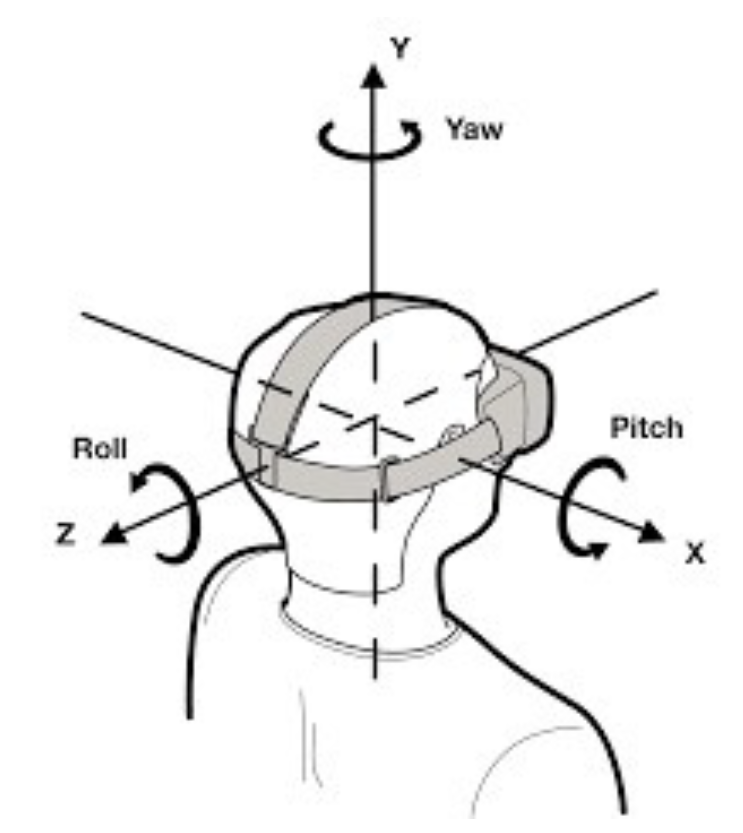
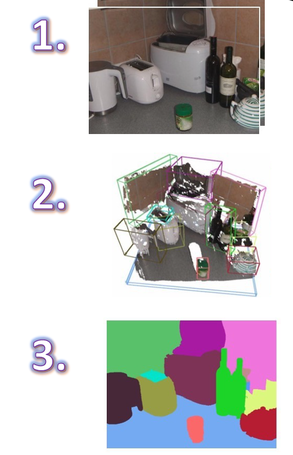

Matching user-predicted head motion
by using a fixed frame of reference to create a
seated experience that respects changes in the
user's head position and head orientation.
The coordinate system provided by the
stationary frame keeps the positions of objects
near the user as stable as possible based on the
real world while taking into account changes in
the position of the user's head.

Scene Understanding
Providing mixed reality developers with
a structured, high-level representation
of the environment, designed to make
the development of environment-aware
applications more intuitive.
Scene understanding provides new
structures designed to simplify placing
scenes.
SceneQuads
describe flat surfaces on which
holograms can be placed.

Mix Reality Video
Setup guide
Step1
both device (quest2 and pc) connect wifi to the same wifi
Step2
click quest link in quest2 to connect quest to pc
Step3
open steam VR from steam
Step4
As Simon doesn't have green screen at home, we need to use
nivida broadcast to remove the background image, which also
achieves same outcome with green screen.
Step5
open liv and find camera setting. Then we can select
camera(NVIDIA Broadcast) as our camera and the background is
removed for MRC later.
Step6
start calibration in liv
Step7
Find capture option in liv, it will automatically detect your
steam library and list out MR supported games, find the game you
want to flim and click launch
Step8
Done ! now you can start your MRC adventure!
Influence of Mixed Reality
Entertainment Industry
Combine immersive environments with real actors captured as 3D
holographic assets, as demonstrated in the "Hold the World"
project by Factory 42 and Sky
Education
MRC can be used to create interactive and engaging learning
experiences by bringing real-world objects and scenarios into
VR environments. This allows for the development of
educational content that integrates virtual and real-world
elements, enhancing the learning experience
Communication
MRC can enhance social interactions in VR by enabling users to
capture and share their virtual experiences with real-world
elements. This technology allows for the creation of
compelling and immersive content that can be shared with
others, enriching communication in virtual environments